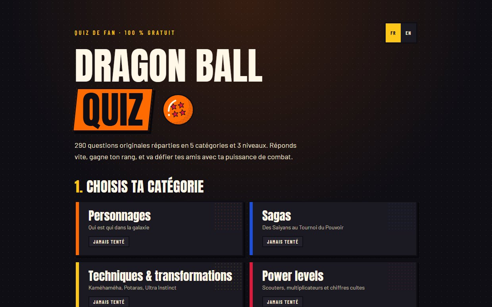
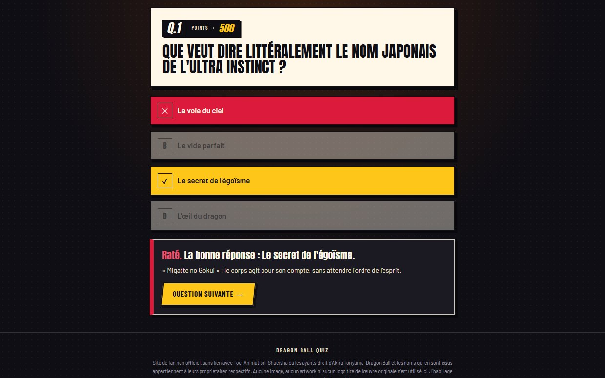
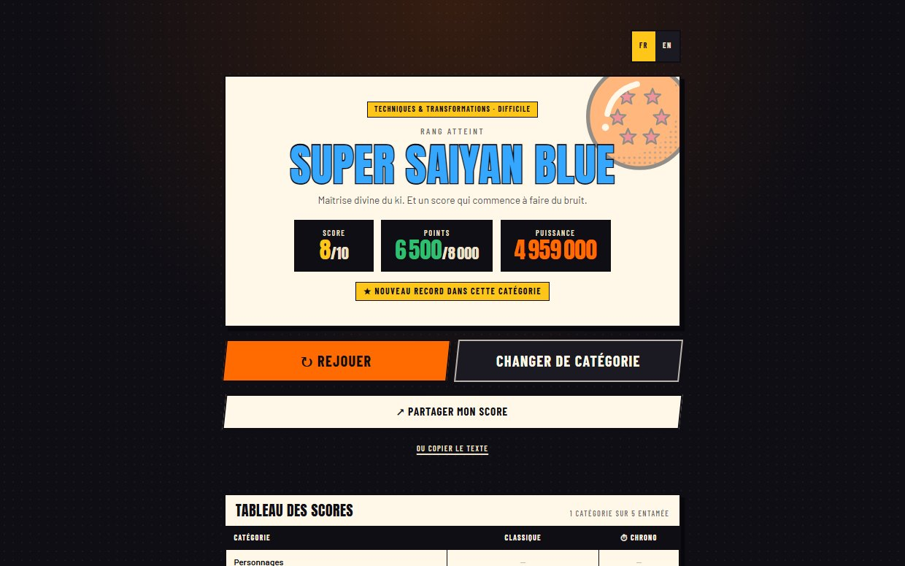

Dragon Ball Quiz.
Un quiz de fan en français et en anglais : 290 questions, cinq catégories, trois niveaux, un mode chrono, et un rang à partager à la fin de chaque partie.
Un projet à moi, pas une commande : il n'y a pas de client derrière, et je préfère le dire tout de suite.

Un vrai quiz, pas un QCM.
Le point de départ tenait en une page. Des catégories et trois niveaux de difficulté. Une réponse expliquée après chaque question. Un score, un rang, et de quoi le partager. Les meilleurs résultats gardés sans créer de compte. Et tout ça pensé d'abord pour le téléphone.
Une règle ne se discutait pas. Dragon Ball appartient à ses ayants droit : aucune image, aucun logo, aucune capture de l'œuvre. L'habillage devait être une création à part entière, et chaque question écrite pour le site, jamais reprise d'un autre quiz.
Une question, puis la réponse expliquée.

Chaque question affiche ce qu'elle rapporte : 300, 500 ou 1 000 points selon sa difficulté. Après la réponse, la bonne est révélée et expliquée en une phrase.

Le rang atteint, le score et les points. Partagé, le lien s'affiche avec sa propre image, dans la langue du joueur.
Le travail qui évite les mauvaises surprises.
Une page qui ne saute pas au chargement.
Sur téléphone, les catégories bougeaient au moment où le texte finissait de s'afficher, juste quand on s'apprête à toucher. En retardant les fichiers un par un, j'ai trouvé trois causes et corrigé les trois. Le score de performance est passé de 76 à 98 sur 100.
Plus aucune requête vers Google.
Les polices de caractères venaient de Google : le premier affichage attendait ses serveurs, et l'adresse de chaque visiteur lui était transmise. Elles sont maintenant servies par le site lui-même. Premier affichage sur téléphone : 1,8 seconde au lieu de 2,7.
Utilisable au clavier et à la voix.
L'outil de Google donnait déjà 100 sur 100 en accessibilité. Un audit qui joue de vraies parties a pourtant trouvé des textes trop pâles et un clavier qui perdait sa place à chaque question. Tout est corrigé, et testé avec le lecteur d'écran de l'iPhone.
Des tests qui ont trouvé un vrai bug.
Plus de 80 tests vérifient les règles du jeu, et un seul échec suffit à bloquer la mise en ligne. Dès leur premier passage, ils ont trouvé une erreur : un 6 sur 10 sur des questions faciles pouvait remplacer un record de 5 sur 10 sur des difficiles, qui valait pourtant 1 200 points de plus.
Pas parfait, et je sais où.
Les records restent sur l'appareil
Pas de compte et pas de serveur : c'est plus simple, et rien n'est collecté. Mais un record obtenu sur téléphone ne se retrouve pas sur l'ordinateur.
Un site de fan
Dragon Ball Quiz n'a aucun lien avec les ayants droit de la série, et le dit en bas de chaque page. Pour la même raison, il n'utilise aucune image tirée de l'œuvre.
Fait avec un assistant IA
Dragon Ball Quiz a été développé avec Claude Code, un assistant de programmation, sous ma direction. Chaque point de cette page a été vérifié sur le site en ligne.
Les outils
React et Tailwind CSS pour le site, Vite pour le construire. Vitest et GitHub Actions pour les tests, GitHub Pages pour l'hébergement.
Un projet en tête ?
Un site de commerce n'a pas besoin d'un mode chrono. Mais il mérite le même soin : une page qui s'affiche vite et sans à-coups, lisible par tout le monde, et vérifiée avant d'être mise en ligne.